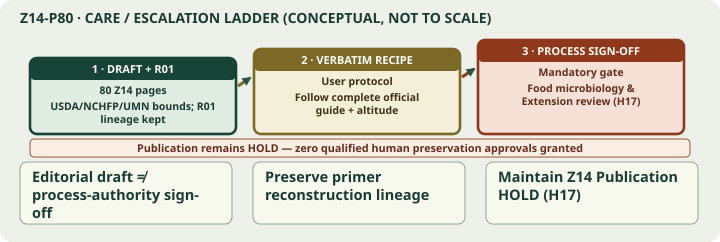

Z14-P80 · Food production and preservation · New manuscript
Maintain Z14 process-authority specialist holds, primer lineage, and publication HOLD
Preserve explicit governance gates, tested-protocol non-alteration rules, and reconstruction traceability across all 80 pages of Zone Z14.
When it applies · Governance, editorial review, and specialist sign-off across all 80 pages of Zone Z14 (Food Production and Preservation, including its retained primer reconstruction).
Equipment · Astra A01 specialist review register (H17), preservation evidence pack (`preservation.md`), and current USDA/NCHFP reference guides.

Actions
- Preserve the zone's starter card explicitly as a labeled `Reconstruction draft` tied to the unrecovered Small Acreage Self-Reliance primer while keeping all 79 newly authored Z14 pages bound directly to USDA, NCHFP, FoodSafety.gov, and University of Minnesota Extension primary guidance.[P06, F06, ED]
- Reinforce across every page that Z14 provides tested-system principles and safety gates—NOT standalone modified recipes or invented shelf-life guarantees; readers must always follow a complete current USDA/NCHFP or Extension recipe verbatim for exact times, pressures, and altitude tables.[P06, P14, P15]
- Maintain `publication: HOLD` and zero qualified human approvals across all 80 Z14 pages until qualified food-preservation process authorities, food microbiologists, and university Extension horticulture/food-safety reviewers complete formal sign-off (`H17`).[P06, P10, ED]
Failure recognition · Distributing unreviewed preservation drafts or shortened summary tables that omit mandatory acidification, 10-minute venting, or altitude adjustments.[P06, P07, P14]
Verify · Confirm the primer reconstruction label is preserved, zero unsafe canning shortcuts are permitted, and `publication: HOLD` stays active on all 80 Z14 cards.[P06, P20, ED]
Stop or change course · Do NOT lift `publication: HOLD` or merge into `main` until Astra technical audit and qualified food-preservation/Extension reviews are recorded in the custody ledger.[P06, ED]
Evidence and editorial notes
- F06 · NCHFP · Ensuring Safe Canned Foods (online reference)
- Section: Ensuring safe canned foods > Acidity and processing methods · Conditions: Tested home-canning recipe and equipment
Support: Low-acid foods require an applicable tested pressure-canning process; acid foods use the tested process for that recipe.
Limitations: Untested modifications can permit Clostridium botulinum survival. · Conflicting evidence: None; retained for Z14 reconstruction.
Editorial note: Maintains five-pack integrity. · Specialist reviewer: Food preservation and public health
Primary source · checked 2026-11-24 - P06 · USDA / NCHFP · USDA Complete Guide to Home Canning (2015 / current NCHFP edition)
- Section: Complete Guide to Home Canning > Principle of Tested Protocols · Conditions: All residential home canning (boiling-water and pressure canning)
Support: Treat every USDA/NCHFP tested canning recipe as a single indivisible system: food pH, piece size, liquid viscosity, jar size, headspace, processing method, pressure/temperature, time, and altitude adjustment must all match the tested protocol.
Limitations: Adding extra starch, flour, oil, fats, or altering acid/low-acid ratios slows heat penetration and can cause lethal botulism. · Conflicting evidence: Directly prohibits online untested shortcuts and heirloom recipe alterations.
Editorial note: Foundational system-integrity rule across all Z14 canning cards. · Specialist reviewer: Food preservation process authority and Extension
Primary source · checked 2026-11-24 - P07 · NCHFP · Using Pressure Canners (current web edition)
- Section: Using Pressure Canners > Low-Acid Foods, Venting, and Gauge Accuracy · Conditions: Low-acid foods (pH > 4.6: meats, poultry, seafood, most vegetables, soups)
Support: Process all low-acid foods strictly in a validated pressure canner (NOT a boiling-water canner, electric multicooker unless independently validated, or oven), vent steam steadily for 10 full minutes before pressurizing, maintain target pressure for the full altitude-adjusted time, and test dial gauges annually.
Limitations: Dropping pressure mid-cycle requires bringing pressure back up and restarting the entire processing timer from zero. · Conflicting evidence: Refutes myths that prolonged boiling-water processing destroys C. botulinum spores.
Editorial note: Core low-acid botulism-prevention boundary in Z14. · Specialist reviewer: Food microbiology and Extension preservation specialist
Primary source · checked 2026-11-24 - P10 · NCHFP · Identifying and Handling Spoiled Canned Food (current web edition)
- Section: Identifying and Handling Spoiled Canned Food > Botulism Detoxification · Conditions: Suspected unsealed, bulging, spurting, foamy, moldy, or improperly processed home-canned jars
Support: Never taste suspect home-canned food—botulinum toxin is odorless and tasteless; check every seal before opening, discard unsealed jars promptly after processing (or refrigerate/reprocess within 24 hours per NCHFP rules), and follow official NCHFP detoxification/disposal steps for suspect low-acid jars.
Limitations: Simple visual clarity or normal smell never proves an untested low-acid jar is free of botulinum toxin. · Conflicting evidence: None; mandatory high-consequence food-safety stop condition.
Editorial note: Anchors spoilage inspection and safe disposal in Z14. · Specialist reviewer: Food microbiology and public health
Primary source · checked 2026-11-24 - P14 · University of Minnesota Extension · Preserving and Preparing Food Safely (current web edition)
- Section: Altitude Adjustments, Dial-Gauge Testing, and Extension Verification · Conditions: Upper Midwest and elevated U.S. locations (above 1,000 feet elevation)
Support: Determine exact local elevation before canning (much of northern and southwestern Minnesota exceeds 1,000 feet), apply USDA altitude increases to boiling-water times or pressure-canner PSI, and use county Extension offices to verify dial gauges and recipes.
Limitations: Water boils at lower temperatures as elevation rises, causing under-processing if sea-level times or pressures are used above 1,000 feet. · Conflicting evidence: None; highlights Minnesota elevations exceeding 1,000 ft where adjustments apply.
Editorial note: Connects local elevation checks directly to Z14 canning protocols. · Specialist reviewer: University Extension food safety specialist
Primary source · checked 2026-11-24 - P15 · FEMA / Ready.gov · Emergency Food Supply (current web edition)
- Section: Emergency Food Inventory > Non-Perishable Rotation, Dietary Needs, and Tools · Conditions: Household multi-day to 30-day emergency pantry planning
Support: Build a rotated pantry of familiar shelf-stable foods requiring minimal water and no refrigeration (canned proteins/vegetables, dry grains/legumes, nut butters, infant/medical/pet diets), keep a manual can opener, and mark purchase/rotation dates clearly (FIFO).
Limitations: Do not invent unverified multi-decade shelf lives; commercial "Best By" dates reflect quality while damaged, rusted, or dented-seam cans pose safety hazards. · Conflicting evidence: None; aligns with FSG-4 and NCHFP storage hygiene.
Editorial note: Grounds household food inventory, FIFO rotation, and can-integrity screening. · Specialist reviewer: Household preparedness and food safety
Primary source · checked 2026-11-24 - P20 · USDA / NCHFP · USDA Complete Guide to Home Canning (2015 / current NCHFP edition)
- Section: Unsafe/Unvalidated Canning Methods to Reject · Conditions: Home food preservation equipment and method selection
Support: Reject oven canning, open-kettle canning, dishwasher canning, microwave canning, and unvalidated electric multicooker pressure canning; dry heat and unpressurized jars fail to destroy C. botulinum spores and risk glass shattering.
Limitations: Only independently validated USDA/NCHFP thermal processes establish safe shelf-stable canning. · Conflicting evidence: Directly refutes popular social-media and vintage canning shortcuts.
Editorial note: Hard-stop method-rejection card evidence across Z14. · Specialist reviewer: Food preservation process authority
Primary source · checked 2026-11-24
Source lineage · Astra A01 Specialist Register and NCHFP (retaining Z14-R01); new manuscript · Classification · New manuscript.